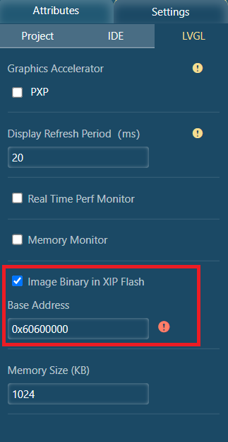

Note: In computer science, execute in place (XIP) is a method of executing programs directly from long-term storage. For this to work, one requirement is that the storage must provide a similar interface to the CPU as regular memory. In this demo, we put the image binary on XIP flash, which can be accessed directly via a base address. This is just for the demonstration of how external images are supported. It is more efficient and simple to link the image as a C array with the pixels in the firmware.
Note: Another real case in which the flash storage cannot be accessed directly via a base address is covered in the subsection below.
Note: IMXRT1060EVK ships an 8 MB Quad SPI flash, with the address from 0x60000000 to 0x607FFFFF. In this demo, we put the image binary to flash starting at address 0x60600000, leaving 2 MB space for the image binary and 6 MB space for the firmware. You can adjust it based on the size of the image binary and firmware.
Note: There is no output as the image binary is not programmed to the flash until now.
<project path>/generated/images/mergeBinFile.bin.